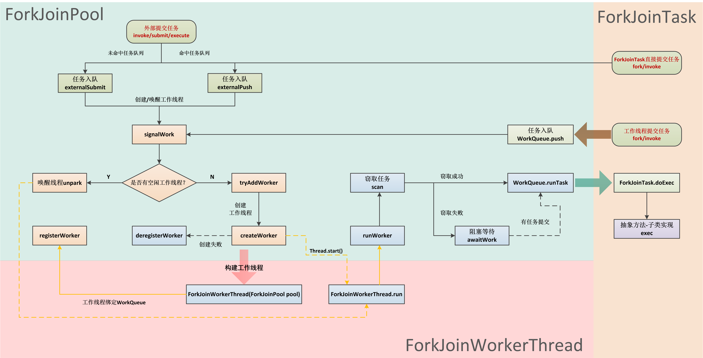
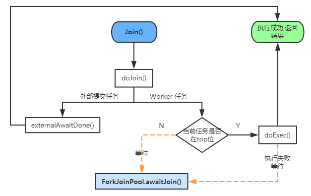

Java多线程进阶（四四）—— J.U.C之executors框架：Fork/Join框架实现
一、引言
前一章——Fork/Join框架（1） 原理，我们从整体上对Fork/Join框架作了介绍。
回顾一下，Fork/Join框架的核心实现类是ForkJoinPool线程池，其它核心组件包括：
ForkJoinTask（任务）、ForkJoinWorkerThread（工作线程）、WorkQueue（任务队列）。
这一章，我们将深入F/J框架的实现细节，看看ForkJoinPool线程池究竟有何特殊之处，F/J框架的整个任务调度流程又是怎样的。
二、任务调度流程
在开始之前，先来看下下面这张图：

上图包含了F/J框架的整个任务调度流程，这里先简要介绍下，以便读者在有个印象，后续的源码分析将完全按照这张图进行。
F/J框架调度任务的流程一共可以分为四大部分：
任务提交
任务提交是整个调度流程的第一步，F/J框架所调度的任务来源有两种：
①外部提交任务
所谓外部提交任务，是指通过ForkJoinPool的execute/submit/invoke方法提交的任务，或者非工作线程（ForkJoinWorkerThread）直接调用ForkJoinTask的fork/invoke方法提交的任务：

外部提交的任务的特点就是调用线程是非工作线程。这个过程涉及以下方法：
ForkJoinPool.submitForkJoinPool.invokeForkJoinPool.executeForkJoinTask.forkForkJoinTask.invokeForkJoinPool.externalPushForkJoinPool.externalSubmit
②工作线程fork任务
所谓工作线程fork任务，是指由ForkJoinPool所维护的工作线程（ForkJoinWorkerThread）从自身任务队列中获取任务（或从其它任务队列窃取），然后执行任务。
工作线程fork任务的特点就是调用线程是工作线程。这个过程涉及以下方法：
ForkJoinTask.doExecWorkQueue.push
创建工作线程
任务提交完成后，ForkJoinPool会根据情况创建或唤醒工作线程，以便执行任务。
ForkJoinPool并不会为每个任务都创建工作线程，而是根据实际情况（构造线程池时的参数）确定是唤醒已有空闲工作线程，还是新建工作线程。这个过程还是涉及任务队列的绑定、工作线程的注销等过程：
ForkJoinPool.signalWorkForkJoinPool.tryAddWorkerForkJoinPool.createWorkerForkJoinWorkerThread.registerWorkerForkJoinPool.deregisterWorker
任务执行
任务入队后，由工作线程开始执行，这个过程涉及任务窃取、工作线程等待等过程：
ForkJoinWorkerThread.runForkJoinPool.runWorkerForkJoinPool.scanForkJoinPool.runTaskForkJoinTask.doExecForkJoinPool.execLocalTasksForkJoinPool.awaitWork
任务结果获取
任务结果一般通过ForkJoinTask的join方法获得，其主要流程如下图：

任务结果获取的核心涉及两点：
- 互助窃取：
ForkJoinPool.helpStealer - 算力补偿：
ForkJoinPool.tryCompensate
三、源码分析
通过第二部分，大致了解了F/J框架调度任务的流程，我们来看下源码实现。
任务提交
①外部提交任务
我们通过ForkJoinPool的submit(ForkJoinTask<T> task)方法来看下这个过程（其它提交任务的方法内部调用几乎一样，不再赘述）：
public <T> ForkJoinTask<T> submit(ForkJoinTask<T> task) {
if (task == null)
throw new NullPointerException();
externalPush(task);
return task;
}
ForkJoinPool.submit内部调用了externalPush方法：
final void externalPush(ForkJoinTask<?> task) {
WorkQueue[] ws;
WorkQueue q;
int m;
int r = ThreadLocalRandom.getProbe();
int rs = runState;
// m & r & SQMASK必为偶数，所以通过externalPush方法提交的任务都添加到了偶数索引的任务队列中（没有绑定的工作线程）
if ((ws = workQueues) != null && (m = (ws.length - 1)) >= 0 &&
(q = ws[m & r & SQMASK]) != null && r != 0 && rs > 0 &&
U.compareAndSwapInt(q, QLOCK, 0, 1)) {
ForkJoinTask<?>[] a;
int am, n, s;
if ((a = q.array) != null &&
(am = a.length - 1) > (n = (s = q.top) - q.base)) {
int j = ((am & s) << ASHIFT) + ABASE;
U.putOrderedObject(a, j, task);
U.putOrderedInt(q, QTOP, s + 1);
U.putIntVolatile(q, QLOCK, 0);
if (n <= 1) // 队列里只有一个任务
signalWork(ws, q); // 创建或激活一个工作线程
return;
}
U.compareAndSwapInt(q, QLOCK, 1, 0);
}
// 未命中任务队列时（WorkQueue == null 或 WorkQueue[i] == null），会进入该方法
externalSubmit(task);
}
当我们首次创建了ForkJoinPool时，任务队列数组并没有初始化，只有当首次提交任务时，才会初始化。
externalPush方法包含两部分：
- 根据线程随机变量、任务队列数组信息，计算命中槽（即本次提交的任务应该添加到任务队列数组中的哪个队列），如果命中且队列中任务数<1，则创建或激活一个工作线程；
- 否则，调用externalSubmit初始化队列，并入队。
/**
* 完整版本的externalPush.
* 处理线程池提交任务时未命中队列的情况和异常情况.
*/
private void externalSubmit(ForkJoinTask<?> task) {
int r; // 线程相关的随机数
if ((r = ThreadLocalRandom.getProbe()) == 0) {
ThreadLocalRandom.localInit();
r = ThreadLocalRandom.getProbe();
}
for (; ; ) {
WorkQueue[] ws;
WorkQueue q;
int rs, m, k;
boolean move = false;
// CASE1: 线程池已关闭
if ((rs = runState) < 0) {
tryTerminate(false, false); // help terminate
throw new RejectedExecutionException();
}
// CASE2: 初始化线程池
else if ((rs & STARTED) == 0 || // initialize
((ws = workQueues) == null || (m = ws.length - 1) < 0)) {
int ns = 0;
rs = lockRunState();
try {
if ((rs & STARTED) == 0) {
U.compareAndSwapObject(this, STEALCOUNTER, null,
new AtomicLong());
// 初始化工作队列数组, 数组大小必须为2的幂次
int p = config & SMASK;
int n = (p > 1) ? p - 1 : 1;
n |= n >>> 1;
n |= n >>> 2;
n |= n >>> 4;
n |= n >>> 8;
n |= n >>> 16;
n = (n + 1) << 1;
workQueues = new WorkQueue[n];
ns = STARTED; // 线程池状态转化为STARTED
}
} finally {
unlockRunState(rs, (rs & ~RSLOCK) | ns);
}
}
// CASE3: 入队任务
else if ((q = ws[k = r & m & SQMASK]) != null) {
if (q.qlock == 0 && U.compareAndSwapInt(q, QLOCK, 0, 1)) {
ForkJoinTask<?>[] a = q.array;
int s = q.top;
boolean submitted = false; // initial submission or resizing
try { // locked version of push
if ((a != null && a.length > s + 1 - q.base) ||
(a = q.growArray()) != null) {
int j = (((a.length - 1) & s) << ASHIFT) + ABASE;
U.putOrderedObject(a, j, task);
U.putOrderedInt(q, QTOP, s + 1);
submitted = true;
}
} finally {
U.compareAndSwapInt(q, QLOCK, 1, 0);
}
if (submitted) {
signalWork(ws, q);
return;
}
}
move = true; // move on failure
}
// CASE4: 创建一个任务队列
else if (((rs = runState) & RSLOCK) == 0) {
q = new WorkQueue(this, null);
q.hint = r;
q.config = k | SHARED_QUEUE; // k为任务队列在队列数组中的索引: k == r & m & SQMASK, 在CASE3的IF判断中赋值
q.scanState = INACTIVE; // 任务队列状态为INACTIVE
rs = lockRunState();
if (rs > 0 && (ws = workQueues) != null &&
k < ws.length && ws[k] == null)
ws[k] = q; // else terminated
unlockRunState(rs, rs & ~RSLOCK);
} else
move = true; // move if busy
if (move)
r = ThreadLocalRandom.advanceProbe(r);
}
}
externalSubmit方法的逻辑很清晰，一共分为4种情况：
- CASE1：线程池已经关闭，则执行终止操作，并拒绝该任务的提交；
- CASE2：线程池未初始化，则进行初始化，主要就是初始化任务队列数组；
- CASE3：命中了任务队列，则将任务入队，并尝试创建/唤醒一个工作线程（Worker）；
- CASE4：未命中任务队列，则在偶数索引处创建一个任务队列
②工作线程fork任务
工作线程fork的任务其实就是子任务，ForkJoinTask.fork方法完成。
看下ForkJoinTask.fork方法，当调用线程为工作线程时，直接添加到其自身队列中：
public final ForkJoinTask<V> fork() {
Thread t;
if ((t = Thread.currentThread()) instanceof ForkJoinWorkerThread) // 如果调用线程为【工作线程】
((ForkJoinWorkerThread) t).workQueue.push(this); // 直接添加到线程的自身队列中
else
ForkJoinPool.common.externalPush(this); // 外部（其它线程）提交的任务
return this;
}
WorkQueue.push方法，任务存入自身队列的栈顶（top）：
final void push(ForkJoinTask<?> task) {
ForkJoinTask<?>[] a;
ForkJoinPool p;
int b = base, s = top, n;
if ((a = array) != null) { // ignore if queue removed
int m = a.length - 1; // fenced write for task visibility
U.putOrderedObject(a, ((m & s) << ASHIFT) + ABASE, task);
U.putOrderedInt(this, QTOP, s + 1); // 任务存入栈顶(top+1)
if ((n = s - b) <= 1) {
if ((p = pool) != null)
p.signalWork(p.workQueues, this); // 唤醒或创建一个工作线程
} else if (n >= m)
growArray(); // 扩容
}
}
如果当前 WorkQueue 为新建的等待队列（
top - base <= 1），则调用signalWork方法为当前 WorkQueue 新建或唤醒一个工作线程；
如果 WorkQueue 中的任务数组容量过小，则调用growArray方法对其进行两倍扩容，
创建工作线程
从流程图可以看出，任务提交后，会调用signalWork方法创建或唤醒一个工作线程，该方法的核心其实就两个分支：
- 工作线程数不足：创建一个工作线程；
- 工作线程数足够：唤醒一个空闲（阻塞）的工作线程。
/**
* 尝试创建或唤醒一个工作线程.
*
* @param ws 任务队列数组
* @param q 当前操作的任务队列WorkQueue
*/
final void signalWork(WorkQueue[] ws, WorkQueue q) {
long c;
int sp, i;
WorkQueue v;
Thread p;
while ((c = ctl) < 0L) { // too few active
// CASE1: 工作线程数不足
if ((sp = (int) c) == 0) {
if ((c & ADD_WORKER) != 0L)
tryAddWorker(c); // 增加工作线程
break;
}
// CASE2: 存在空闲工作线程，则唤醒
if (ws == null) // unstarted/terminated
break;
if (ws.length <= (i = sp & SMASK)) // terminated
break;
if ((v = ws[i]) == null) // terminating
break;
int vs = (sp + SS_SEQ) & ~INACTIVE; // next scanState
int d = sp - v.scanState; // screen CAS
long nc = (UC_MASK & (c + AC_UNIT)) | (SP_MASK & v.stackPred);
if (d == 0 && U.compareAndSwapLong(this, CTL, c, nc)) {
v.scanState = vs; // activate v
if ((p = v.parker) != null)
U.unpark(p);
break;
}
if (q != null && q.base == q.top) // no more work
break;
}
}
先来看创建工作线程的方法tryAddWorker，其实就是设置下字段值（活跃/总工作线程池数），然后调用createWorker真正创建一个工作线程：
private void tryAddWorker(long c) {
boolean add = false;
do {
// 设置活跃工作线程数、总工作线程池数
long nc = ((AC_MASK & (c + AC_UNIT)) |
(TC_MASK & (c + TC_UNIT)));
if (ctl == c) {
int rs, stop; // check if terminating
if ((stop = (rs = lockRunState()) & STOP) == 0)
add = U.compareAndSwapLong(this, CTL, c, nc);
unlockRunState(rs, rs & ~RSLOCK);
if (stop != 0)
break;
// 创建工作线程
if (add) {
createWorker();
break;
}
}
} while (((c = ctl) & ADD_WORKER) != 0L && (int) c == 0);
}
private boolean createWorker() {
ForkJoinWorkerThreadFactory fac = factory;
Throwable ex = null;
ForkJoinWorkerThread wt = null;
try {
// 使用线程池工厂创建线程
if (fac != null && (wt = fac.newThread(this)) != null) {
wt.start(); // 启动线程
return true;
}
} catch (Throwable rex) {
ex = rex;
}
// 创建出现异常，则注销该工作线程
deregisterWorker(wt, ex);
return false;
}
如果创建过程中出现异常，则调用deregisterWorker注销线程：
final void deregisterWorker(ForkJoinWorkerThread wt, Throwable ex) {
WorkQueue w = null;
// 1.移除workQueue
if (wt != null && (w = wt.workQueue) != null) { // 获取ForkJoinWorkerThread的等待队列
WorkQueue[] ws;
int idx = w.config & SMASK; // 计算workQueue索引
int rs = lockRunState(); // 获取runState锁和当前池运行状态
if ((ws = workQueues) != null && ws.length > idx && ws[idx] == w)
ws[idx] = null; // 移除workQueue
unlockRunState(rs, rs & ~RSLOCK); // 解除runState锁
}
// 2.减少CTL数
long c; // decrement counts
do {
} while (!U.compareAndSwapLong
(this, CTL, c = ctl, ((AC_MASK & (c - AC_UNIT)) |
(TC_MASK & (c - TC_UNIT)) |
(SP_MASK & c))));
// 3.处理被移除workQueue内部相关参数
if (w != null) {
w.qlock = -1; // ensure set
w.transferStealCount(this);
w.cancelAll(); // cancel remaining tasks
}
// 4.如果线程未终止，替换被移除的workQueue并唤醒内部线程
for (; ; ) { // possibly replace
WorkQueue[] ws;
int m, sp;
// 尝试终止线程池
if (tryTerminate(false, false) || w == null || w.array == null ||
(runState & STOP) != 0 || (ws = workQueues) == null ||
(m = ws.length - 1) < 0) // already terminating
break;
// 唤醒被替换的线程，依赖于下一步
if ((sp = (int) (c = ctl)) != 0) { // wake up replacement
if (tryRelease(c, ws[sp & m], AC_UNIT))
break;
}
// 创建工作线程替换
else if (ex != null && (c & ADD_WORKER) != 0L) {
tryAddWorker(c); // create replacement
break;
} else // don't need replacement
break;
}
// 5.处理异常
if (ex == null) // help clean on way out
ForkJoinTask.helpExpungeStaleExceptions();
else // rethrow
ForkJoinTask.rethrow(ex);
}
deregisterWorker方法用于工作线程运行完毕之后终止线程或处理工作线程异常，主要就是清除已关闭的工作线程或回滚创建线程之前的操作，并把传入的异常抛给 ForkJoinTask 来处理。
工作线程在构造的过程中，会保存线程池信息和与自己绑定的任务队列信息。它通过ForkJoinPool.registerWorker方法将自己注册到线程池中：
protected ForkJoinWorkerThread(ForkJoinPool pool) {
// Use a placeholder until a useful name can be set in registerWorker
super("aForkJoinWorkerThread");
this.pool = pool;
this.workQueue = pool.registerWorker(this);
}
final WorkQueue registerWorker(ForkJoinWorkerThread wt) {
UncaughtExceptionHandler handler;
wt.setDaemon(true); // configure thread
if ((handler = ueh) != null)
wt.setUncaughtExceptionHandler(handler);
// 创建一个工作队列, 并于该工作线程绑定
WorkQueue w = new WorkQueue(this, wt);
int i = 0; // 记录队列在任务队列数组中的索引, 始终为奇数
int mode = config & MODE_MASK;
int rs = lockRunState();
try {
WorkQueue[] ws;
int n;
if ((ws = workQueues) != null && (n = ws.length) > 0) {
int s = indexSeed += SEED_INCREMENT; // unlikely to collide
int m = n - 1;
i = ((s << 1) | 1) & m; // 经计算后, i为奇数
if (ws[i] != null) { // 槽冲突, 即WorkQueue[i]位置已经有了任务队列
// 重新计算索引i
int probes = 0; // step by approx half n
int step = (n <= 4) ? 2 : ((n >>> 1) & EVENMASK) + 2;
while (ws[i = (i + step) & m] != null) {
if (++probes >= n) {
workQueues = ws = Arrays.copyOf(ws, n <<= 1);
m = n - 1;
probes = 0;
}
}
}
// 设置队列状态为SCANNING
w.hint = s; // use as random seed
w.config = i | mode;
w.scanState = i; // publication fence
ws[i] = w;
}
} finally {
unlockRunState(rs, rs & ~RSLOCK);
}
wt.setName(workerNamePrefix.concat(Integer.toString(i >>> 1)));
return w;
}
前文讲过，工作线程（Worker）自身的任务队列，其数组下标始终是奇数，registerWorker方法的主要作用就是在任务队列数组WorkQueue[]找到一个空的奇数位，然后在该位置创建WorkQueue。
至此，线程池的任务提交工作和工作线程创建工作就全部完成了，接下来开始工作线程的执行。
任务执行
ForkJoinWorkerThread启动后，会执行它的run方法，该方法内部调用了ForkJoinPool.runWorker方法来执行任务：
public void run() {
if (workQueue.array == null) { // only run once
Throwable exception = null;
try {
onStart(); // 钩子方法
pool.runWorker(workQueue);
} catch (Throwable ex) {
exception = ex;
} finally {
try {
onTermination(exception);
} catch (Throwable ex) {
if (exception == null)
exception = ex;
} finally {
pool.deregisterWorker(this, exception);
}
}
}
}
runWorker方法的核心流程如下：
- scan：尝试获取一个任务；
- runTask：执行取得的任务；
- awaitWork：没有任务则阻塞。
final void runWorker(WorkQueue w) {
w.growArray(); // 初始化任务队列
int seed = w.hint; // initially holds randomization hint
int r = (seed == 0) ? 1 : seed; // avoid 0 for xorShift
for (ForkJoinTask<?> t; ; ) {
// CASE1: 尝试获取一个任务
if ((t = scan(w, r)) != null)
w.runTask(t); // 获取成功, 执行任务
// CASE2: 获取失败, 阻塞等待任务入队
else if (!awaitWork(w, r)) // 等待失败, 跳出该方法后, 工作线程会被注销
break;
r ^= r << 13;
r ^= r >>> 17;
r ^= r << 5; // xorshift
}
}
注意：如果
awaitWork返回false，等不到任务，则跳出runWorker的循环，回到run中执行finally，最后调用deregisterWorker注销工作线程。
任务窃取——scan
private ForkJoinTask<?> scan(WorkQueue w, int r) {
WorkQueue[] ws;
int m;
if ((ws = workQueues) != null && (m = ws.length - 1) > 0 && w != null) {
int ss = w.scanState; // initially non-negative
for (int origin = r & m, k = origin, oldSum = 0, checkSum = 0; ; ) {
WorkQueue q;
ForkJoinTask<?>[] a;
ForkJoinTask<?> t;
int b, n;
long c;
// 根据随机数r定位一个任务队列
if ((q = ws[k]) != null) { // 获取workQueue
if ((n = (b = q.base) - q.top) < 0 &&
(a = q.array) != null) { // non-empty
long i = (((a.length - 1) & b) << ASHIFT) + ABASE;
if ((t = ((ForkJoinTask<?>)
U.getObjectVolatile(a, i))) != null && // 取base位置任务
q.base == b) {
// 成功获取到任务
if (ss >= 0) {
if (U.compareAndSwapObject(a, i, t, null)) {
q.base = b + 1; // 更新base位
if (n < -1)
signalWork(ws, q); // 创建或唤醒工作线程来运行任务
return t;
}
} else if (oldSum == 0 && // try to activate
w.scanState < 0)
tryRelease(c = ctl, ws[m & (int) c], AC_UNIT); // 唤醒栈顶工作线程
}
// base位置任务为空或base位置偏移，随机移位重新扫描
if (ss < 0) // refresh
ss = w.scanState;
r ^= r << 1;
r ^= r >>> 3;
r ^= r << 10;
origin = k = r & m; // move and rescan
oldSum = checkSum = 0;
continue;
}
checkSum += b;
}
if ((k = (k + 1) & m) == origin) { // continue until stable
// 运行到这里说明已经扫描了全部的 workQueues，但并未扫描到任务
if ((ss >= 0 || (ss == (ss = w.scanState))) &&
oldSum == (oldSum = checkSum)) {
if (ss < 0 || w.qlock < 0) // already inactive
break;
// 对当前WorkQueue进行灭活操作
int ns = ss | INACTIVE; // try to inactivate
long nc = ((SP_MASK & ns) |
(UC_MASK & ((c = ctl) - AC_UNIT)));
w.stackPred = (int) c; // hold prev stack top
U.putInt(w, QSCANSTATE, ns);
if (U.compareAndSwapLong(this, CTL, c, nc))
ss = ns;
else
w.scanState = ss; // back out
}
checkSum = 0;
}
}
}
return null;
}
扫描并尝试偷取一个任务。随机选择一个WorkQueue，获取base位的 ForkJoinTask，成功取到后更新base位并返回任务；如果取到的 WorkQueue 中任务数大于1，则调用signalWork创建或唤醒其他工作线程。
阻塞等待——awaitWork
如果scan方法未扫描到任务，会调用awaitWork等待获取任务：
private boolean awaitWork(WorkQueue w, int r) {
if (w == null || w.qlock < 0) // w is terminating
return false;
for (int pred = w.stackPred, spins = SPINS, ss; ; ) {
if ((ss = w.scanState) >= 0) // 正在扫描，跳出循环
break;
else if (spins > 0) {
r ^= r << 6;
r ^= r >>> 21;
r ^= r << 7;
if (r >= 0 && --spins == 0) { // randomize spins
WorkQueue v;
WorkQueue[] ws;
int s, j;
AtomicLong sc;
if (pred != 0 && (ws = workQueues) != null &&
(j = pred & SMASK) < ws.length &&
(v = ws[j]) != null && // see if pred parking
(v.parker == null || v.scanState >= 0))
spins = SPINS; // continue spinning
}
} else if (w.qlock < 0) // 当前workQueue已经终止，返回false recheck after spins
return false;
else if (!Thread.interrupted()) { // 判断线程是否被中断，并清除中断状态
long c, prevctl, parkTime, deadline;
int ac = (int) ((c = ctl) >> AC_SHIFT) + (config & SMASK); // 活跃线程数
if ((ac <= 0 && tryTerminate(false, false)) || // 无active线程，尝试终止
(runState & STOP) != 0) // pool terminating
return false;
if (ac <= 0 && ss == (int) c) { // is last waiter
// 计算活跃线程数（高32位）并更新为下一个栈顶的scanState（低32位）
prevctl = (UC_MASK & (c + AC_UNIT)) | (SP_MASK & pred);
int t = (short) (c >>> TC_SHIFT); // shrink excess spares
if (t > 2 && U.compareAndSwapLong(this, CTL, c, prevctl))//总线程过量
return false; // else use timed wait
// 计算空闲超时时间
parkTime = IDLE_TIMEOUT * ((t >= 0) ? 1 : 1 - t);
deadline = System.nanoTime() + parkTime - TIMEOUT_SLOP;
} else
prevctl = parkTime = deadline = 0L;
Thread wt = Thread.currentThread();
U.putObject(wt, PARKBLOCKER, this); // emulate LockSupport
w.parker = wt; // 设置parker，准备阻塞
if (w.scanState < 0 && ctl == c) // recheck before park
U.park(false, parkTime); // 阻塞指定的时间
U.putOrderedObject(w, QPARKER, null);
U.putObject(wt, PARKBLOCKER, null);
if (w.scanState >= 0) // 正在扫描，说明等到任务，跳出循环
break;
if (parkTime != 0L && ctl == c &&
deadline - System.nanoTime() <= 0L &&
U.compareAndSwapLong(this, CTL, c, prevctl)) // 未等到任务，更新ctl，返回false
return false; // shrink pool
}
}
return true;
}
任务执行——runTask
窃取到任务后，调用WorkQueue.runTask方法执行任务：
final void runTask(ForkJoinTask<?> task) {
if (task != null) {
scanState &= ~SCANNING; // mark as busy
(currentSteal = task).doExec(); // 更新currentSteal并执行任务
U.putOrderedObject(this, QCURRENTSTEAL, null); // release for GC
execLocalTasks(); // 依次执行本地任务
ForkJoinWorkerThread thread = owner;
if (++nsteals < 0) // collect on overflow
transferStealCount(pool); // 增加偷取任务数
scanState |= SCANNING;
if (thread != null)
thread.afterTopLevelExec(); // 执行钩子函数
}
}
1.首先调用FutureTask.deExec()执行任务，其内部会调用FutureTask.exec()方法，该方法为抽象方法，由子类实现。
子类实现该方法时，一般会进行fork，导致生成子任务，并最终添加到调用线程自身地任务队列中：
final int doExec() {
int s;
boolean completed;
if ((s = status) >= 0) {
try {
completed = exec(); // exec为抽象方法, 由子类实现
} catch (Throwable rex) {
return setExceptionalCompletion(rex);
}
if (completed)
s = setCompletion(NORMAL);
}
return s;
}
2.除了执行窃取到的任务，工作线程还会执行自己队列中的任务，即WorkQueue.execLocalTasks方法：
final void execLocalTasks() {
int b = base, m, s;
ForkJoinTask<?>[] a = array;
if (b - (s = top - 1) <= 0 && a != null &&
(m = a.length - 1) >= 0) {
if ((config & FIFO_QUEUE) == 0) { // LIFO, 从top -> base 遍历执行任务
for (ForkJoinTask<?> t; ; ) {
if ((t = (ForkJoinTask<?>) U.getAndSetObject
(a, ((m & s) << ASHIFT) + ABASE, null)) == null)
break;
U.putOrderedInt(this, QTOP, s);
t.doExec();
if (base - (s = top - 1) > 0)
break;
}
} else // FIFO, 从base -> top 遍历执行任务
pollAndExecAll();
}
}
构建线程池时的
asyncMode参数，决定了工作线程执行自身队列中的任务的方式。如果asyncMode == true，则以FIFO的方式执行任务；否则，以LIFO的方式执行任务。
任务结果获取
ForkJoinTask.join()可以用来获取任务的执行结果。join方法的执行逻辑如下：
public final V join() {
int s;
if ((s = doJoin() & DONE_MASK) != NORMAL)
reportException(s);
return getRawResult();
}
可以看到，内部先调用doJoin方法：
private int doJoin() {
int s;
Thread t;
ForkJoinWorkerThread wt;
ForkJoinPool.WorkQueue w;
return (s = status) < 0 ? s :
((t = Thread.currentThread()) instanceof ForkJoinWorkerThread) ?
(w = (wt = (ForkJoinWorkerThread) t).workQueue).tryUnpush(this) && (s = doExec()) < 0 ? s :
wt.pool.awaitJoin(w, this, 0L) :
externalAwaitDone();
}
doJoin方法会判断调用线程是否是工作线程：
1.如果是非工作线程调用的join，则最终调用externalAwaitDone()阻塞等待任务的完成。
2.如果是工作线程调用的join，则存在以下情况：
- 如果需要join的任务已经完成，直接返回运行结果；
- 如果需要join的任务刚刚好是当前线程所拥有的队列的top位置，则立即执行它。
- 如果该任务不在top位置,则调用awaitJoin方法等待
关键看下ForkJoinPool.awaitJoin等待过程中发生了什么：
final int awaitJoin(WorkQueue w, ForkJoinTask<?> task, long deadline) {
int s = 0;
if (task != null && w != null) {
ForkJoinTask<?> prevJoin = w.currentJoin; // 获取给定Worker的join任务
U.putOrderedObject(w, QCURRENTJOIN, task); // 把currentJoin替换为给定任务
// 判断是否为CountedCompleter类型的任务
CountedCompleter<?> cc = (task instanceof CountedCompleter) ?
(CountedCompleter<?>) task : null;
for (; ; ) {
if ((s = task.status) < 0) // 已经完成|取消|异常 跳出循环
break;
if (cc != null) // CountedCompleter任务由helpComplete来完成join
helpComplete(w, cc, 0);
else if (w.base == w.top || w.tryRemoveAndExec(task)) //尝试执行
helpStealer(w, task); // 队列为空或执行失败，任务可能被偷，帮助偷取者执行该任务
if ((s = task.status) < 0) // 已经完成|取消|异常，跳出循环
break;
// 计算任务等待时间
long ms, ns;
if (deadline == 0L)
ms = 0L;
else if ((ns = deadline - System.nanoTime()) <= 0L)
break;
else if ((ms = TimeUnit.NANOSECONDS.toMillis(ns)) <= 0L)
ms = 1L;
if (tryCompensate(w)) { // 执行补偿操作
task.internalWait(ms); // 补偿执行成功，任务等待指定时间
U.getAndAddLong(this, CTL, AC_UNIT); // 更新活跃线程数
}
}
U.putOrderedObject(w, QCURRENTJOIN, prevJoin); // 循环结束，替换为原来的join任务
}
return s;
}
ForkJoinPool.awaitJoin方法中有三个重要方法：
- tryRemoveAndExec
- helpStealer
- tryCompensate
这里说下这三个方法的主要作用，不贴代码了：
tryRemoveAndExec：
当工作线程正在等待join的任务时，它会从top位开始自旋向下查找该任务：
- 如果找到则移除并执行它；
- 如果找不到，说明说明任务可能被偷，则调用helpStealer方法反过来帮助偷取者执行它自己的任务。
helpStealer：
- 先定位的偷取者的任务队列；
- 从偷取者的base索引开始，每次偷取一个任务执行。
tryCompensate：
tryCompensate主要用来补偿工作线程因为阻塞而导致的算力损失，当工作线程自身的队列不为空，且还有其它空闲工作线程时，如果自己阻塞了，则在此之前会唤醒一个工作线程。
四、总结
本章和上一章——Fork/Join框架（1） 原理，从思想、使用、实现等方面较完整地分析了Fork/Join框架，Fork/Join框架的使用需要根据实际情况划分子任务的大小。
理解F/J框架需要先从整体上了解框架调度任务的流程（参考本章开头的调度图），可以自己通过示例模拟一个任务的调度过程，然后根据实际运用过程中遇到的问题，再去调试及在相应的源码中查看实现原理。